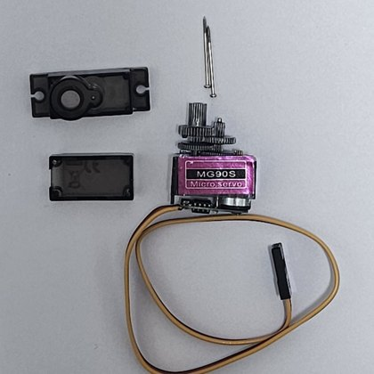
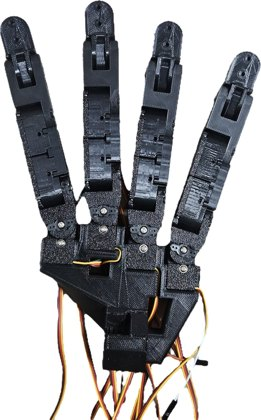
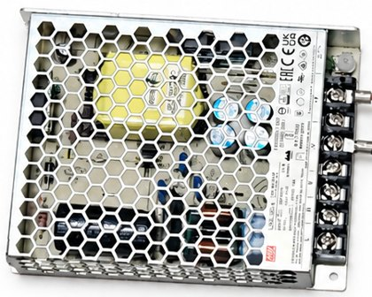
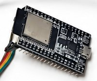
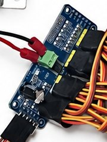

Parts List
Everything needed for one hand costs 87,340 KRW. All actuators are MG90S metal-gear micro servos that are taken out of their housings and rebuilt inside the 3D-printed fingers; everything else is a standard hobby-electronics part.
₩87,340
total parts cost
16
MG90S servos
(38% of the cost)
(38% of the cost)
1 kg
PLA+ filament spool
for all printed parts
for all printed parts
| Item | Name | Quantity | Cost (ea., KRW) | Total (KRW) |
|---|---|---|---|---|
 |
MG90S metal-gear micro servo Housing removed; motor, gears, potentiometer and board rebuilt inside the finger frame. Thumb 4, each other finger 3. |
16 | 2,090 | 33,440 |
 |
eSUN PLA+ filament, 1 kg Palm, finger links and servo frames, all 3D-printed. |
1 | 19,800 | 19,800 |
 |
5 V 18 A SMPS Servo power, wired directly to the PCA9685 V+ terminal. |
1 | 16,800 | 16,800 |
 |
ESP32 development board Receives joint targets from the PC over USB serial. |
1 | 7,000 | 7,000 |
| Wiring and consumables Jumper wire set, elastic cord for the passive fingertips, adhesive, etc. |
1 | 5,000 | 5,000 | |
 |
PCA9685 16-channel PWM servo driver I²C from the ESP32; one channel per actuated joint. |
1 | 3,300 | 3,300 |
| M3 bolts and nuts M3 bolts (12 mm and others) and an M3 nut set. |
1 | 2,000 | 2,000 | |
| Total | 87,340 |
Prices from Table 5 of the KSME final report (2026). Table 6 of the report PDF lists about 130,000 KRW; the itemised total in Table 5 is 87,340 KRW. Shipping and tools (3D printer, soldering iron, screwdrivers) are not included.
Build Steps
The order of fabrication used for the prototype.
1
Print the parts. Finger links, palm and the
servo-holding frames, all in PLA+.2
Rebuild the servos. Open each MG90S, discard the
housing and fit the motor, gears, potentiometer and board into a printed frame, extending and soldering
the wires.3
Assemble the fingers. Join the MCP and PIP
units and fit the PIP–DIP link on the four common fingers.4
Build the thumb. Same lower structure, plus a
separate DIP servo instead of the link.5
Mount the modules. Attach the finger modules and
the thumb to the palm through their detachable interfaces.6
Wire it up. Servos to the PCA9685, PCA9685 to the
ESP32 and the 5 V supply, and the ESP32 to the PC over USB.
Step 2: stock MG90S, opened

Step 2: rebuilt in a finger frame

Step 5: four finger modules mounted

Finished hand